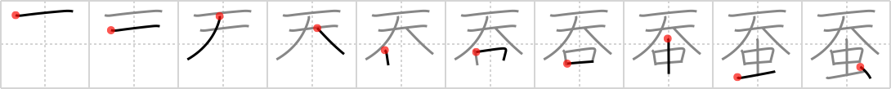

蚕
← →
silkworm

Reading:
On-Yomi: サン、テン — Kun-Yomi: かいこ、こ
Heisig story:
Heavens . . . insect. Be sure to do something about the position of the two elements.
Koohii stories:
1) [dihutenosa] 31-8-2007(211): There are no insects in heaven - well, that is, except for silkworms. What, do you expect Jesus to import his fancy robes from China?
2) [kokeshidoll17] 16-9-2008(164): In China it was believed that the silkworms were insects sent from heaven because of the beautiful material they produced.
3) [yawfosu88] 5-8-2007(40): Imagine an insect, the silkworm descending from a heavenly, golden, cloud- filled sky on a single string of silk.
4) [g33kette] 4-3-2008(17): Heavenly bug.
5) [vosmiura] 30-5-2007(12): The poor silkworm insect goes up to heaven after we boil its coccoon to take its silk.